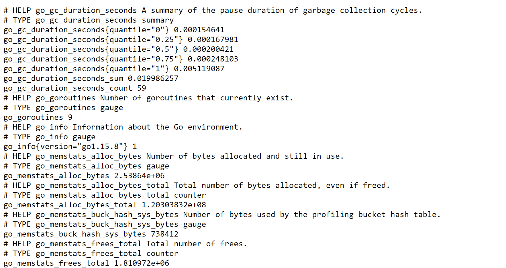
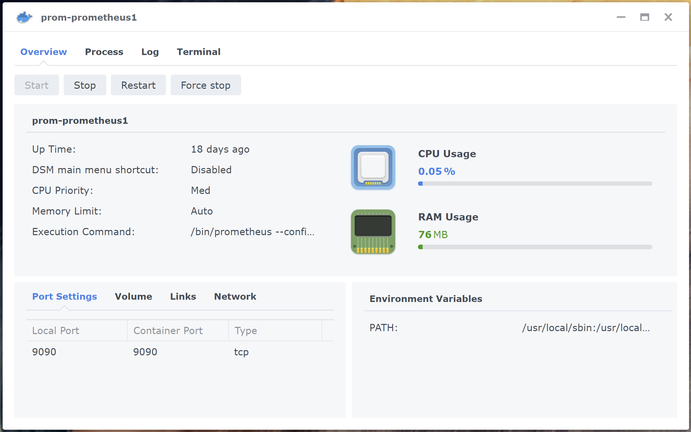
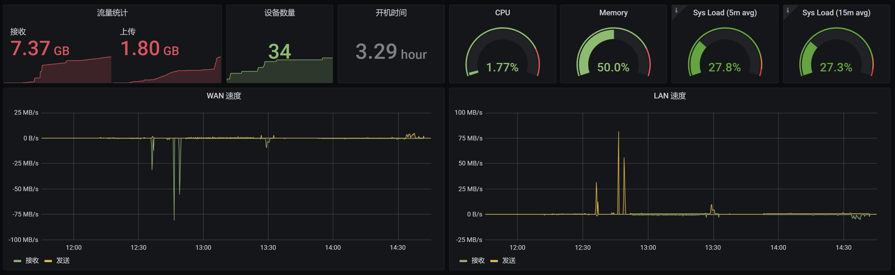

使用Node Exporter + Prometheus + Grafana给Asus AX86U加个监控。弄这一套的目的有两个，第一是了解一下Prometheus是如何工作的，第二也是尝试将家里的网络设备监控起来。
Node Exporter: 一个用来收集 Linux/UNIX 硬件和OS metric的工具，并将收集到metric通过HTTP的方式暴露出来。
Prometheus: 开源的系统监视和警报工具。
Grafana: 查询，可视化metric并记录警报。
安装Node Exporter
Asus AX86U是ARMv8架构。亲测，可以使用ARMv7的的包。
1
2
3
4
5
6
7
8
| wget https://github.com/prometheus/node_exporter/releases/download/v1.1.2/node_exporter-1.1.2.linux-armv7.tar.gz
tar xzvf node_exporter-1.1.2.linux-armv7.tar.gz
mkdir -p /jffs/bin/
cp node_exporter-1.1.2.linux-armv7/node_exporter /jffs/bin/
echo "cru a \"node_exporter\" \"*/1 * * * * ps | grep node_exporter | grep -v -q grep || /jffs/bin/node_exporter\"" >> /jffs/scripts/services-start
reboot
|
当Node Exporter安装成功之后，访问路由器的9100端口. 如果你的路由器IP是192.168.1.1, 那么可以访问一下 http://192.168.1.1:9100/metrics 就可以得到类似下面的这样的结果。

看到这样的结果，就说明Node Exporter安装成功了。
需要说明的是，
- 这里使用的包是直接拿的Linux的二进制包，所以会比较大，大约16M。可能对于JFFS空间不足的小伙伴儿，就比较难受了。
- 这里采集的Linux OS的数据，所以很多的信息对于路由器而言是大可不必的，而有些需要的又没有的。看之后有没有空，自己DIY一版。
安装Prometheus
在开始的时候，我本打算起一个VM用来专门跑Prometheus，但是后来想了一下大可不必。我最终的方案是在Synology DS216+II 上用容器跑了。
配置文件如下：
1
2
3
4
5
6
7
8
9
10
11
12
13
14
15
16
17
18
19
20
21
22
23
24
25
26
27
28
29
30
| global:
scrape_interval: 15s
scrape_timeout: 10s
evaluation_interval: 15s
alerting:
alertmanagers:
- scheme: http
timeout: 10s
api_version: v1
static_configs:
- targets: []
scrape_configs:
- job_name: prometheus
honor_timestamps: true
scrape_interval: 15s
scrape_timeout: 10s
metrics_path: /metrics
scheme: http
static_configs:
- targets:
- localhost:9090
- job_name: asuswrt
honor_timestamps: true
scrape_interval: 15s
scrape_timeout: 10s
metrics_path: /metrics
scheme: http
static_configs:
- targets:
- 192.168.1.1:9100
|

安装Grafana
使用了一个已经搭建好了的Grafana，来展示路由器的信息
下面是自己做的一个Dashboard。

如果不想自己做，可以使用以下现成的dashboard
https://grafana.com/grafana/dashboards/13978
https://grafana.com/grafana/dashboards/1860